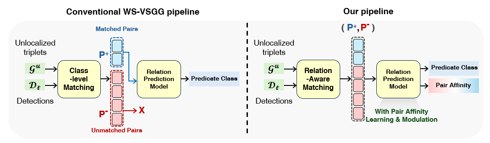

01
Overall framework
Conventional WS-VSGG trains only on class-matched pairs and discards unmatched pairs, even though both appear at inference. Our pipeline refines the matched partition and learns predicate classes together with pair affinity from matched and unmatched pairs.
